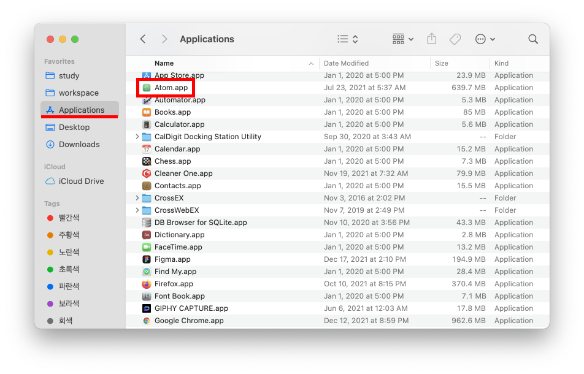
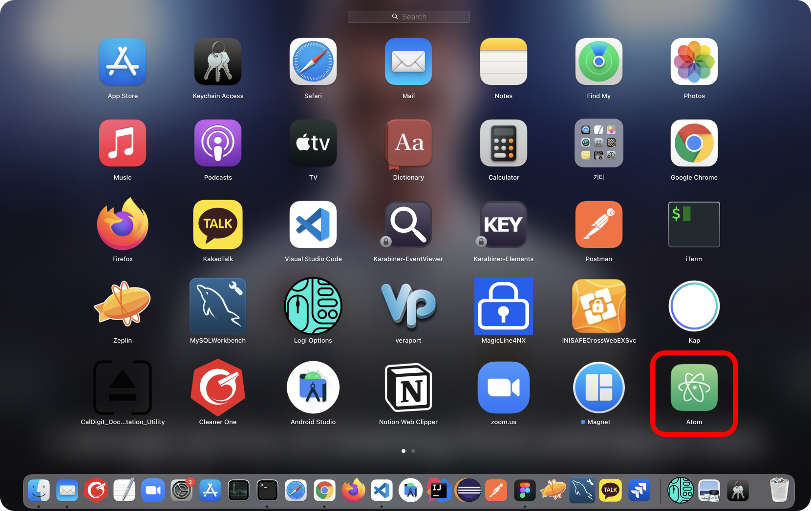

[Homebrew] Homebrew란?
Homebrew는 MacOS용 패키지 관리자다. Homebrew를 사용하면 패키지를 쉽게 설치, 관리, 업데이트, 제거할 수 있다.
Homebrew 설치
터미널에서 다음 명령어를 입력하면 Homebrew가 설치된다.
1 | $ /usr/bin/ruby -e "$(curl -fsSL https://raw.githubusercontent.com/Homebrew/install/master/install)" |
Homebrew 사용법
Homebrew의 버전을 확인해보자.
1 | $ brew --version |
Homewbrew의 명령어는 다음과 같다.
| 명령어 | 설명 | 비고 |
|---|---|---|
| brew install [패키지명] | 패키지 설치 | |
| brew uninstall [패키지명] | 패키지 삭제 | |
| brew upgrade [패키지명] | 패키지 업그레이드 | 패키지명 미입력시, 전체 업그레이드 |
| brew search [패키지명] | 패키지 검색 | |
| brew list | 설치된 패키지 목록 확인하기 | |
| brew update | Homebrew 업데이트 |
Homebrew로 mysql을 설치하려고 한다. mysql을 탐색해보자
1 | $ brew search mysql |
mysql을 설치한다.
1 | $ brew install mysql |
설치된 패키지 목록을 확인할 수 있다.
1 | brew list |
mysql은 백그라운드에서 데몬 프로세스로 동작한다. mysql은 다음과 같이 구동한다.
1 | $ brew services start mysql |
실행 중인 목록을 확인할 수 있다.
1 | Name Status User File |
재시작할 수 있다.
1 | $ brew services restart mysql |
데몬을 정지할 수 있다.
1 | $ brew services stop mysql |
설치 경로
Homebrew로 설치한 패키지는 /usr/local/Cellar에 설치된다.
1 | $ pwd |
Homebrew Cask
Homebrew Cask를 사용하면 Chrome, Atom 등 GUI 기반의 어플리케이션을 설치할 수 있다.
우선 Homebrew Cask를 설치하자.
1 | $ brew install cask |
잘 설치되었는지 확인해보자.
1 | $ brew list |
이제 Atom을 설치해보자.
1 | // $ brew install --cask <package_name> |
Atom이 잘 설치되었는지 확인해보자.
1 | $ brew list -- cask |
Homebrew Cask로 설치한 패키지는 Application디렉토리에서 확인할 수 있다.
Launchpad에서도 확인할 수 있다.
